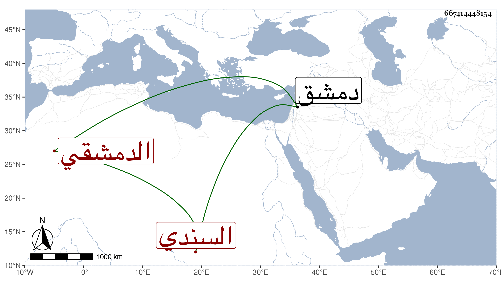

0902Sakhawi.DawLamic.ITO20230111-ara1.EIS1600.667414448154
Biography ID: 667414448154
92
بهادر بن عبد الله الأرمني ثم الدمشقي السندي بفتح المهملة والنون عتيق ابن سند . سمع مع مولاه من أبي العباس المرداوي وابن قيم الضيائية وأحمد ابن محمد بن أبي الزهر الغسولي وزينب ابنة قاسم الدبابيسي في آخرين . قال شيخنا قرأت عليه بدمشق كتاب الصفات للدارقطني وغيرها ومات بها في شوال سنة عشر مقتولا .
